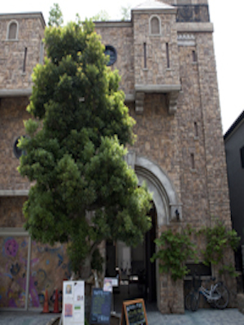

アートの新たな発信基地となることを目指して建てられた複合施設。閑静な住宅街にあり、作品発表の場や機会を提供するだけでなく、多彩なワークショップや公募展を企画しています。地下1階部分に約100坪のアートコンプレックス・ホール、2階部分に5つの独立したギャラリースペースがあり、開催される展示会は、アーティストの持ち込み企画による展示、アーティストを発掘・紹介する企画、公募展などさまざま。展示会やワークショップの情報は、公式ホームページや公式SNSでチェックできます。また、1階にはカフェが設けられ、太陽の陽が燦燦と降り注ぐ開放的な空間が広がります。新たなアートスポットに注目！
